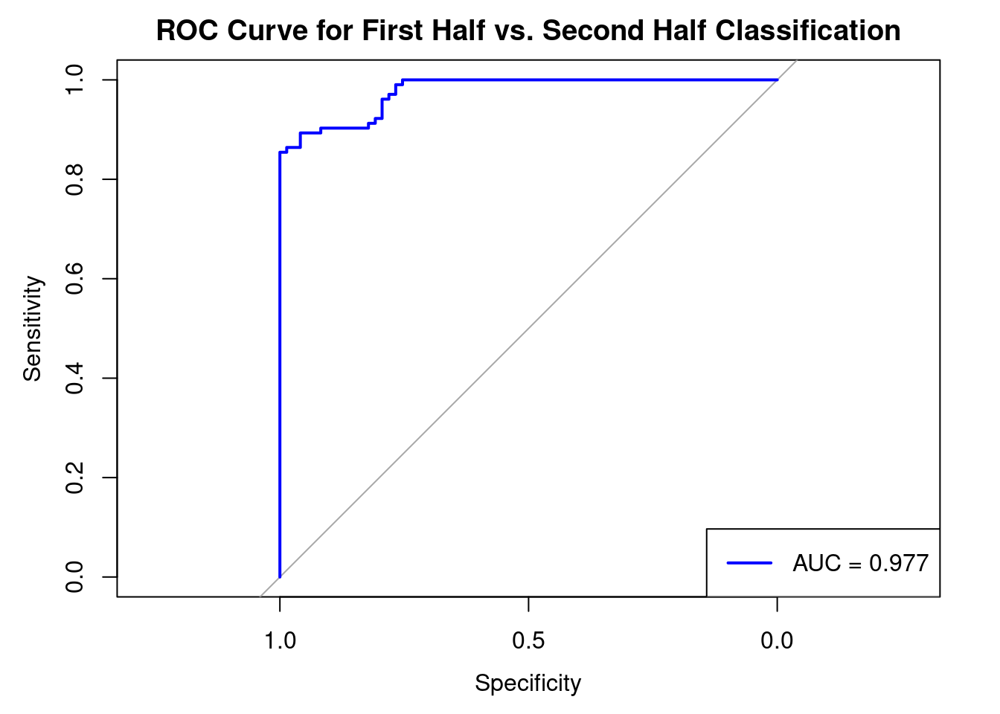

Rows: 176 Columns: 3149
── Column specification ────────────────────────────────────────────────────────
Delimiter: ","
chr (1): Episode URL
dbl (3148): captains, log, stardate, destination, planet, four, beyond, lies...
ℹ Use `spec()` to retrieve the full column specification for this data.
ℹ Specify the column types or set `show_col_types = FALSE` to quiet this message.
long_data <- data %>%pivot_longer(cols =-`Episode URL`, names_to ="word", values_to ="count")
Histogram
counts <- long_data %>%group_by(word) %>%summarize(total_count =sum(count)) %>%ungroup()filtered_counts <- counts %>%filter(total_count >1000) %>%arrange(desc(total_count)) ggplot(filtered_counts, aes(x =reorder(word, -total_count), y = total_count)) +geom_bar(stat ="identity") +labs(title ="Histogram of words count (Words with > 1000 Occurrences)",x ="Word",y ="Total Count") +theme_minimal() +theme(axis.text.x =element_text(angle =90, hjust =1))
PCA
numeric_data <- data %>%select(-`Episode URL`)pca_result <-prcomp(numeric_data, scale. =TRUE)pca_data <-as.data.frame(pca_result$rotation[,1:2])ggplot(pca_data, aes(x = PC1, y = PC2)) +geom_point( alpha =0.7) +labs(title ="Rotation Matrix of PCA",x ="Principal Component 1",y ="Principal Component 2") +theme_minimal() +theme(legend.position ="none") # Hide legend for readability
The echo: false option disables the printing of code (only output is displayed).
pca_data <- pca_data %>%rownames_to_column(var ="word") %>%mutate(color =ifelse(word %in%c("picard", "riker", "data", "troi", "worf", "crusher"), word, "other") )ggplot(pca_data) +geom_point(data =subset(pca_data, color =="other"), aes(x = PC1, y = PC2), color ="grey", size =2, alpha =0.4) +geom_point(data =subset(pca_data, color !="other"), aes(x = PC1, y = PC2, color = color), size =4, alpha =0.9) +geom_point(data =subset(pca_data, color !="other"), aes(x = PC1, y = PC2), color ="black", size =4.5, shape =21, stroke =1.2) +scale_color_manual(values =c("picard"="blue","riker"="red","data"="green","troi"="purple","worf"="orange","crusher"="brown","other"="grey" )) +labs(title ="Rotation Matrix of PCA with Most Frequent Character Highlighted",x ="Principal Component 1",y ="Principal Component 2",color ="Most Frequent Character") +theme_minimal()
Comment: These character names are wildly spreading.
Comment: I will proceed with 6 clusters as Gap Statistic does not improve from 6 to 7.
Visualization on 2D
x <- pca_result$x[, 1:2]colnames(x) <-c("PC1", "PC2") cluster_data <-as.data.frame(x)kmeans <-kmeans(numeric_data %>%as.matrix(), 6)cluster_data$cluster <-factor(kmeans$cluster) ggplot(cluster_data, aes(x = PC1, y = PC2, color = cluster)) +geom_point(size =3, alpha =0.7) +labs(title ="2D PCA of Episode Word Counts with 6 Clusters",x ="Principal Component 1",y ="Principal Component 2",color ="Cluster") +theme_minimal() +scale_color_manual(values =c("1"="#E41A1C", "2"="#377EB8", "3"="#4DAF4A", "4"="#984EA3", "5"="#FF7F00", "6"="#FFFF33" ))
Ada-boost Classifier
label =rbind(data.frame(Production =101:126, Season =1),data.frame(Production =127:148, Season =2),data.frame(Production =149:174, Season =3),data.frame(Production =175:200, Season =4),data.frame(Production =201:226, Season =5),data.frame(Production =227:252, Season =6),data.frame(Production =253:277, Season =7))std_devs <- data %>%select(-`Episode URL`) %>%summarise(across(everything(), sd, na.rm =TRUE))
Warning: There was 1 warning in `summarise()`.
ℹ In argument: `across(everything(), sd, na.rm = TRUE)`.
Caused by warning:
! The `...` argument of `across()` is deprecated as of dplyr 1.1.0.
Supply arguments directly to `.fns` through an anonymous function instead.
# Previously
across(a:b, mean, na.rm = TRUE)
# Now
across(a:b, \(x) mean(x, na.rm = TRUE))
Warning: Setting `distribution = "multinomial"` is ill-advised as it is
currently broken. It exists only for backwards compatibility. Use at your own
risk.
summary(model_gbm)
var rel.inf
pulaski pulaski 1.072084e+01
tasha tasha 7.857691e+00
wesley wesley 3.949912e+00
right right 2.245034e+00
picard picard 2.238081e+00
crusher crusher 1.918333e+00
plasma plasma 1.816747e+00
leave leave 1.668151e+00
like like 1.575747e+00
seconds seconds 1.413609e+00
think think 1.360373e+00
bridge bridge 1.307941e+00
much much 1.244876e+00
computer computer 1.241411e+00
captain captain 1.218555e+00
point point 1.196238e+00
riker riker 1.136773e+00
four four 1.134209e+00
one one 1.126988e+00
whats whats 1.121252e+00
worf worf 1.107241e+00
number number 1.090722e+00
sir sir 1.086096e+00
obrien obrien 1.079729e+00
twenty twenty 1.059430e+00
thank thank 1.046841e+00
stop stop 9.713105e-01
little little 9.596654e-01
know know 9.435825e-01
lets lets 9.372903e-01
woman woman 8.676467e-01
believe believe 8.341097e-01
please please 8.193427e-01
corridor corridor 7.932717e-01
said said 7.875685e-01
lieutenant lieutenant 7.280222e-01
sure sure 6.992400e-01
way way 6.979089e-01
take take 6.312595e-01
time time 6.241880e-01
want want 6.150932e-01
us us 6.114671e-01
station station 6.036852e-01
ship ship 5.978710e-01
new new 5.947988e-01
fire fire 5.685322e-01
going going 5.669336e-01
viewscreen viewscreen 5.509513e-01
data data 5.494244e-01
three three 5.457590e-01
life life 5.409649e-01
could could 5.264215e-01
yar yar 5.233181e-01
let let 5.179340e-01
cant cant 5.141303e-01
maybe maybe 5.111110e-01
long long 4.922640e-01
sensors sensors 4.878208e-01
mister mister 4.812994e-01
beam beam 4.783084e-01
ago ago 4.679683e-01
human human 4.653001e-01
family family 4.624902e-01
must must 4.455675e-01
perhaps perhaps 4.410919e-01
aye aye 4.296584e-01
field field 4.291889e-01
tell tell 4.193754e-01
command command 4.160125e-01
yes yes 4.129612e-01
father father 4.021884e-01
back back 3.954364e-01
percent percent 3.884872e-01
able able 3.859998e-01
room room 3.855768e-01
subspace subspace 3.708082e-01
laforge laforge 3.691116e-01
two two 3.676523e-01
happened happened 3.628065e-01
systems systems 3.579939e-01
quarters quarters 3.542379e-01
find find 3.528388e-01
understand understand 3.486326e-01
ill ill 3.480897e-01
might might 3.401080e-01
jeanluc jeanluc 3.294826e-01
sorry sorry 3.270439e-01
guinan guinan 3.131532e-01
need need 3.075325e-01
radiation radiation 3.044306e-01
anything anything 3.024437e-01
people people 2.931943e-01
go go 2.885362e-01
crew crew 2.773859e-01
come come 2.691458e-01
forward forward 2.661466e-01
enterprise enterprise 2.656484e-01
may may 2.655412e-01
ready ready 2.607930e-01
transporter transporter 2.508523e-01
never never 2.471256e-01
id id 2.466696e-01
ensign ensign 2.447215e-01
ten ten 2.421749e-01
system system 2.380803e-01
sickbay sickbay 2.353573e-01
get get 2.336829e-01
holodeck holodeck 2.179501e-01
got got 2.139588e-01
planet planet 2.121772e-01
ive ive 2.058233e-01
log log 1.990600e-01
help help 1.941688e-01
really really 1.927508e-01
found found 1.900714e-01
troi troi 1.838859e-01
aboard aboard 1.829403e-01
admiral admiral 1.683873e-01
home home 1.628849e-01
brother brother 1.623208e-01
im im 1.604987e-01
something something 1.597355e-01
surface surface 1.537976e-01
well well 1.518209e-01
report report 1.483805e-01
real real 1.482060e-01
programme programme 1.445837e-01
romulan romulan 1.430170e-01
neutral neutral 1.388624e-01
boy boy 1.318345e-01
transport transport 1.258381e-01
medical medical 1.240333e-01
hundred hundred 1.228950e-01
away away 1.199926e-01
youre youre 1.178420e-01
say say 1.136539e-01
thought thought 1.113600e-01
federation federation 1.079819e-01
thats thats 1.062108e-01
vessel vessel 1.054608e-01
alien alien 1.016139e-01
core core 9.886666e-02
good good 9.805374e-02
course course 9.690552e-02
ambassador ambassador 9.469663e-02
see see 8.320160e-02
ogawa ogawa 7.736287e-02
oh oh 7.721618e-02
still still 7.532366e-02
man man 7.445080e-02
youve youve 7.389642e-02
hes hes 7.372651e-02
years years 7.354399e-02
theres theres 7.354131e-02
starfleet starfleet 7.211099e-02
hours hours 6.754422e-02
shes shes 6.744009e-02
shuttlecraft shuttlecraft 6.540683e-02
bay bay 6.456955e-02
mission mission 5.787478e-02
shields shields 5.587684e-02
warp warp 5.516281e-02
look look 5.012708e-02
old old 4.956413e-02
dont dont 4.866119e-02
power power 4.806823e-02
theyre theyre 4.697968e-02
past past 4.658108e-02
mother mother 4.642877e-02
energy energy 4.610514e-02
space space 4.451245e-02
doctor doctor 4.422031e-02
remember remember 4.350386e-02
entity entity 4.218457e-02
seven seven 4.137659e-02
oc oc 4.077051e-02
chief chief 3.954280e-02
geordi geordi 3.543746e-02
commander commander 2.989507e-02
future future 2.896066e-02
starbase starbase 2.821809e-02
five five 2.410326e-02
klingon klingon 2.374818e-02
datas datas 1.992897e-02
children children 1.893874e-02
monitor monitor 1.876330e-02
would would 1.765844e-02
team team 1.718571e-02
cargo cargo 1.645337e-02
work work 1.505764e-02
cardassian cardassian 1.460221e-02
laboratory laboratory 1.413861e-02
first first 1.346288e-02
alexander alexander 1.280313e-02
didnt didnt 1.267864e-02
wave wave 1.140491e-02
war war 1.131564e-02
ships ships 9.469174e-03
weve weve 7.948478e-03
counsellor counsellor 6.372825e-03
zero zero 6.345598e-03
shield shield 6.140943e-03
water water 5.288364e-03
deanna deanna 5.248097e-03
control control 4.512756e-03
son son 3.114608e-03
engines engines 3.053645e-03
la la 2.337090e-03
beverly beverly 2.336461e-03
zone zone 1.617275e-03
security security 1.615603e-03
council council 1.086256e-03
engineering engineering 9.985553e-04
probe probe 9.359893e-04
colony colony 8.249993e-04
guy guy 7.212101e-04
particle particle 6.347742e-04
shuttle shuttle 4.156786e-04
`2` `2` 1.808159e-04
nothing nothing 1.731678e-04
ferengi ferengi 1.407484e-04
lab lab 1.351739e-04
engine engine 9.691941e-05
forge forge 4.742921e-05
vulcan vulcan 1.346038e-05
q q 0.000000e+00
barclay barclay 0.000000e+00
lwaxana lwaxana 0.000000e+00
ro ro 0.000000e+00
borg borg 0.000000e+00
vash vash 0.000000e+00
clara clara 0.000000e+00
lal lal 0.000000e+00
amanda amanda 0.000000e+00
jameson jameson 0.000000e+00
kehleyr kehleyr 0.000000e+00
moriarty moriarty 0.000000e+00
jr jr 0.000000e+00
salia salia 0.000000e+00
soren soren 0.000000e+00
scott scott 0.000000e+00
kahless kahless 0.000000e+00
lore lore 0.000000e+00
ardra ardra 0.000000e+00
timicin timicin 0.000000e+00
rasmussen rasmussen 0.000000e+00
okona okona 0.000000e+00
timothy timothy 0.000000e+00
kamala kamala 0.000000e+00
spock spock 0.000000e+00
armus armus 0.000000e+00
alkar alkar 0.000000e+00
jono jono 0.000000e+00
gowron gowron 0.000000e+00
nella nella 0.000000e+00
jellico jellico 0.000000e+00
leah leah 0.000000e+00
jason jason 0.000000e+00
marr marr 0.000000e+00
shelby shelby 0.000000e+00
conor conor 0.000000e+00
fajo fajo 0.000000e+00
sarek sarek 0.000000e+00
tam tam 0.000000e+00
juliana juliana 0.000000e+00
isabella isabella 0.000000e+00
ishara ishara 0.000000e+00
john john 0.000000e+00
farallon farallon 0.000000e+00
satie satie 0.000000e+00
tjon tjon 0.000000e+00
kyle kyle 0.000000e+00
kmtar kmtar 0.000000e+00
clemens clemens 0.000000e+00
ral ral 0.000000e+00
lutan lutan 0.000000e+00
jeremy jeremy 0.000000e+00
pressman pressman 0.000000e+00
nikolai nikolai 0.000000e+00
jenna jenna 0.000000e+00
susanna susanna 0.000000e+00
apgar apgar 0.000000e+00
anna anna 0.000000e+00
baran baran 0.000000e+00
hannah hannah 0.000000e+00
beata beata 0.000000e+00
karnas karnas 0.000000e+00
toreth toreth 0.000000e+00
duras duras 0.000000e+00
kurn kurn 0.000000e+00
sito sito 0.000000e+00
finn finn 0.000000e+00
anya anya 0.000000e+00
jev jev 0.000000e+00
remmick remmick 0.000000e+00
stubbs stubbs 0.000000e+00
lavelle lavelle 0.000000e+00
soong soong 0.000000e+00
eline eline 0.000000e+00
madred madred 0.000000e+00
yuta yuta 0.000000e+00
tog tog 0.000000e+00
aquiel aquiel 0.000000e+00
korris korris 0.000000e+00
liko liko 0.000000e+00
robin robin 0.000000e+00
radue radue 0.000000e+00
nuria nuria 0.000000e+00
kevin kevin 0.000000e+00
bok bok 0.000000e+00
wyatt wyatt 0.000000e+00
dirgo dirgo 0.000000e+00
nvek nvek 0.000000e+00
odan odan 0.000000e+00
dathon dathon 0.000000e+00
kelsey kelsey 0.000000e+00
ronin ronin 0.000000e+00
kargan kargan 0.000000e+00
maxwell maxwell 0.000000e+00
traveller traveller 0.000000e+00
tallera tallera 0.000000e+00
anomaly anomaly 0.000000e+00
russell russell 0.000000e+00
sheliak sheliak 0.000000e+00
kolrami kolrami 0.000000e+00
mirasta mirasta 0.000000e+00
gia gia 0.000000e+00
maddox maddox 0.000000e+00
durken durken 0.000000e+00
tholl tholl 0.000000e+00
kosinski kosinski 0.000000e+00
grebnedlog grebnedlog 0.000000e+00
manua manua 0.000000e+00
batai batai 0.000000e+00
jenice jenice 0.000000e+00
locarno locarno 0.000000e+00
robert robert 0.000000e+00
graves graves 0.000000e+00
rishon rishon 0.000000e+00
marouk marouk 0.000000e+00
quinn quinn 0.000000e+00
keiko keiko 0.000000e+00
zorn zorn 0.000000e+00
bochra bochra 0.000000e+00
roga roga 0.000000e+00
garvin garvin 0.000000e+00
brull brull 0.000000e+00
bael bael 0.000000e+00
tomalak tomalak 0.000000e+00
mandl mandl 0.000000e+00
reyga reyga 0.000000e+00
maques maques 0.000000e+00
endar endar 0.000000e+00
manheim manheim 0.000000e+00
minuet minuet 0.000000e+00
phillipa phillipa 0.000000e+00
setal setal 0.000000e+00
haftel haftel 0.000000e+00
macduff macduff 0.000000e+00
macet macet 0.000000e+00
jared jared 0.000000e+00
granger granger 0.000000e+00
gosheven gosheven 0.000000e+00
sovak sovak 0.000000e+00
tarses tarses 0.000000e+00
corey corey 0.000000e+00
galen galen 0.000000e+00
perrin perrin 0.000000e+00
texas texas 0.000000e+00
kennelly kennelly 0.000000e+00
countess countess 0.000000e+00
taurik taurik 0.000000e+00
danilo danilo 0.000000e+00
krag krag 0.000000e+00
castillo castillo 0.000000e+00
taitt taitt 0.000000e+00
romulans romulans 0.000000e+00
ralph ralph 0.000000e+00
riva riva 0.000000e+00
garrett garrett 0.000000e+00
kell kell 0.000000e+00
mauric mauric 0.000000e+00
toq toq 0.000000e+00
krola krola 0.000000e+00
darmok darmok 0.000000e+00
holmes holmes 0.000000e+00
professor professor 0.000000e+00
stargazer stargazer 0.000000e+00
bellboy bellboy 0.000000e+00
ardrian ardrian 0.000000e+00
talur talur 0.000000e+00
sobi sobi 0.000000e+00
chorgan chorgan 0.000000e+00
make make 0.000000e+00
hugh hugh 0.000000e+00
mendon mendon 0.000000e+00
briam briam 0.000000e+00
koroth koroth 0.000000e+00
hathaway hathaway 0.000000e+00
esoqq esoqq 0.000000e+00
exocomp exocomp 0.000000e+00
tokath tokath 0.000000e+00
kmpec kmpec 0.000000e+00
jake jake 0.000000e+00
marta marta 0.000000e+00
redblock redblock 0.000000e+00
tarmin tarmin 0.000000e+00
macias macias 0.000000e+00
ian ian 0.000000e+00
ben ben 0.000000e+00
marla marla 0.000000e+00
sela sela 0.000000e+00
rivan rivan 0.000000e+00
harry harry 0.000000e+00
voval voval 0.000000e+00
rabal rabal 0.000000e+00
kalita kalita 0.000000e+00
klag klag 0.000000e+00
officer officer 0.000000e+00
pardek pardek 0.000000e+00
brand brand 0.000000e+00
tpel tpel 0.000000e+00
sarjenka sarjenka 0.000000e+00
goss goss 0.000000e+00
sutter sutter 0.000000e+00
syrus syrus 0.000000e+00
byleth byleth 0.000000e+00
cardassians cardassians 0.000000e+00
sonny sonny 0.000000e+00
anne anne 0.000000e+00
ramsey ramsey 0.000000e+00
langor langor 0.000000e+00
sergey sergey 0.000000e+00
marie marie 0.000000e+00
sabin sabin 0.000000e+00
wormhole wormhole 0.000000e+00
game game 0.000000e+00
reg reg 0.000000e+00
scholar scholar 0.000000e+00
lantree lantree 0.000000e+00
kareen kareen 0.000000e+00
oji oji 0.000000e+00
danar danar 0.000000e+00
alexana alexana 0.000000e+00
vorin vorin 0.000000e+00
martin martin 0.000000e+00
ethan ethan 0.000000e+00
kingsley kingsley 0.000000e+00
exocomps exocomps 0.000000e+00
prytt prytt 0.000000e+00
interface interface 0.000000e+00
yamato yamato 0.000000e+00
helena helena 0.000000e+00
chancellor chancellor 0.000000e+00
nayrok nayrok 0.000000e+00
vagh vagh 0.000000e+00
raman raman 0.000000e+00
masaka masaka 0.000000e+00
klingons klingons 0.000000e+00
betor betor 0.000000e+00
brenna brenna 0.000000e+00
conductor conductor 0.000000e+00
liator liator 0.000000e+00
yareena yareena 0.000000e+00
leech leech 0.000000e+00
varria varria 0.000000e+00
berel berel 0.000000e+00
jobril jobril 0.000000e+00
lursa lursa 0.000000e+00
portal portal 0.000000e+00
romas romas 0.000000e+00
haro haro 0.000000e+00
hobson hobson 0.000000e+00
bashir bashir 0.000000e+00
orton orton 0.000000e+00
loquel loquel 0.000000e+00
hedril hedril 0.000000e+00
santos santos 0.000000e+00
sonya sonya 0.000000e+00
rift rift 0.000000e+00
phoenix phoenix 0.000000e+00
rashella rashella 0.000000e+00
tamarian tamarian 0.000000e+00
brossmer brossmer 0.000000e+00
deseve deseve 0.000000e+00
hutch hutch 0.000000e+00
nudaq nudaq 0.000000e+00
dataihat dataihat 0.000000e+00
maquis maquis 0.000000e+00
moon moon 0.000000e+00
quantum quantum 0.000000e+00
lemec lemec 0.000000e+00
distortion distortion 0.000000e+00
tin tin 0.000000e+00
clerk clerk 0.000000e+00
tarr tarr 0.000000e+00
mordock mordock 0.000000e+00
debin debin 0.000000e+00
rana rana 0.000000e+00
dokachin dokachin 0.000000e+00
Comment: The important features are pulaski, tasha, wesley, right, picard, crusher, etc.
auc_value <-auc(roc_curve)plot(roc_curve, main ="ROC Curve for First Half vs. Second Half Classification", col ="blue")legend("bottomright", legend =paste("AUC =", round(auc_value, 3)), col ="blue", lwd =2)

Comment: AUC = 0.977, the model is performing very well.